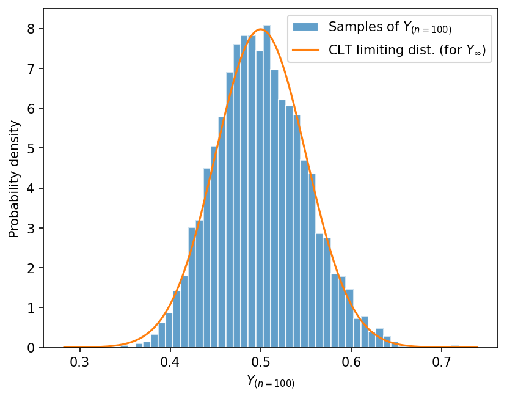
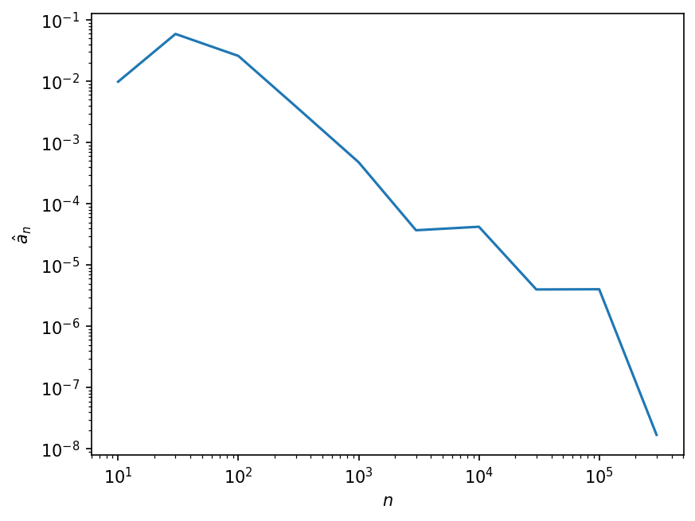

Lab 3: Central Limit Theorem and Estimators#
For the class on Wednesday, January 15th
Tip
If you experience scrolling issues when using Jupyter,
you can try updating jupyterlab by activating the 7730 environment and
running conda install jupyterlab=4.4.0a*. Then, restart jupyter-lab.
A. Central Limit Theorem#
If we draw \(n\) samples from a random variable \(X\) and calculate the sample average, then the sample average can be thought of as a new random variable \(Y_n\):
where \(X_1, X_2, \cdots, X_n\) are independent and identically distributed (iid) as \(X\). Note that we put a subscript \(n\) to \(Y\) to indicate that when we change the value of \(n\), the random variable \(Y_n\) also changes. (You can think about a simple case: \(Y_1\) and \(Y_2\) are two different random variables because \(Y_1\) is just \(X\), while \(Y_2\) is the average of two iid \(X\)’s.)
As discussed in class, the mean and variance of \(Y_n\) are
These two relations are true for any \(n\).
The classical Central Limit Theorem (CLT) further states that the distribution of \(Y_n\) will approach a normal distribution when \(n \rightarrow \infty\). The limiting distribution (the distribution of \(Y_\infty\)) will have a mean of \(\mathrm{E}[X]\), and a variance of \(\mathrm{Var}[X] / n\).
Note that the CLT specifies the limiting distribution, but not the distribution of \(Y_n\) for any finite \(n\). In practice, if \(n\) is large, we often can use the normal distribution to approximate the distribution of \(Y_n\). When we do so, be aware that we have not only invoked the CLT but also applied an extra approximation, and the latter is valid only when \(n\) is large enough.
In Part A of this lab, we will verify the CLT with numerical simulations. This involves two steps:
We need to construct \(Y_n\) with a large \(n\).
We need to draw from \(Y_n\) many times to check if the samples of \(Y_n\) behave like they were sampled from a Gaussian.
It is important to note that there are two different sample sizes here. In Step 1 we have \(n\), which is the number of samples we draw from \(X\) to define \(Y_n\). \(Y_n\) is a single random variable that we can also draw many samples from, and that’s what we do in Step 2. Let’s use \(k\) to denote the number of samples of \(Y_n\) that we draw in Step 2.
For our simulation, we will assume that \(X\) follows an exponential distribution, with a rate parameter \(\lambda = 2\). In other words, \( X \) has a PDF of \(p(x) = 2e^{-2x}\) for \(x \geq 0\), and \(p(x) = 0\) for \(x<0\).
📝 Questions:
What is the mean and variance of \(X\)? (Hint: you can find the answers on Wikipedia.)
// Add your answers here
A1. Numerical test of the CLT#
First, we will define X_dist to the distribution of \(X\), which follows an
exponential distribution with a rate parameter \(\lambda = 2\) as described above.
scipy.stats.expon implements the exponential distribution; however, it has a different parametrization.
If you read its documentation,
it says that SciPy’s parameterization corresponds to scale = 1 / lambda.
So we will be setting scale to 0.5 in this case.
It’s always a good idea to check if the resulting distribution (X_dist)
has the correct mean and variance as a sanity check.
import numpy as np
import matplotlib.pyplot as plt
import scipy.stats
from tqdm.notebook import trange
X_dist = scipy.stats.expon(scale=0.5)
print("E[X] =", X_dist.mean())
print("Var[X] =", X_dist.var())
E[X] = 0.5
Var[X] = 0.25
n = 100 # n dictates how many X's to average over to get Y_n
k = 5000 # k dictates how many samples of Y_n we need to simulate
# This list `Yn_samples` will be used to collect the k samples of Y_n
Yn_samples = []
for _ in trange(k):
X_samples = X_dist.rvs(n) # draw n samples from X
Yn_sample = np.mean(X_samples) # Y_n is the average of n X's
Yn_samples.append(Yn_sample) # collect one sample of Y_n to our list
# We should have collected k samples of Y_n
print("How many samples of Y_n have we collected?", len(Yn_samples))
How many samples of Y_n have we collected? 5000
Let’s now define the CLT limiting distribution using scipy.stats.norm
Note that the scale parameter used in scipy.stats.norm represents the standard deviation (square root of the variance).
We will also print out the numerical values of the mean and variance of the limiting distribution to make sure they are what we expect.
clt_limiting_dist = scipy.stats.norm(loc=X_dist.mean(), scale=np.sqrt(X_dist.var()/n))
print("E[Y_inf] =", clt_limiting_dist.mean())
print("Var[Y_inf] =", clt_limiting_dist.var())
E[Y_inf] = 0.5
Var[Y_inf] = 0.0025000000000000005
We can now compare the histogram of the samples of \(Y_n\) (which we called Yn_samples in the code)
with the PDF of the CLT limiting distribution (which we called clt_limiting_dist in the code).
We will also print out the numerical values of the (sample) mean and variance of the samples of \(Y_n\).
fig, ax = plt.subplots(dpi=150)
ax.hist(Yn_samples, bins=50, density=True, alpha=0.7, edgecolor="w", color="C0", label=f"Samples of $Y_{{(n={n})}}$")
x = np.linspace(*ax.get_xlim(), num=1001)
ax.plot(x, clt_limiting_dist.pdf(x), color="C1", label="CLT limiting dist. (for $Y_{\\infty}$)")
ax.set_xlabel(f"$Y_{{(n={n})}}$")
ax.set_ylabel("Probability density")
ax.legend();
print("Average of samples of Y_n =", np.mean(Yn_samples))
print("Variance of samples of Y_n =", np.var(Yn_samples))
Average of samples of Y_n = 0.5002042599425477
Variance of samples of Y_n = 0.0024887560306014805

📝 Questions:
Briefly describe what you observe from the result above. Is the result consistent with what you expect?
What happens if you increase the value of
n(but holdkfixed)? Tryn = 10000andk = 5000and briefly describe what changes you observe.What happens if you increase the value of
k(but holdnfixed)? Tryn = 100andk = 50000and briefly describe what changes you observe. Is there anything that surprises you?What happens if you change
X_distto a different distribution? Pick a distribution you like fromscipy.statsand update the lineX_dist = ...at the beginning of the code. Re-run the code and briefly describe what changes you observe.
// Add your answers here
B. Estimator Properties#
Consider a set of \(n\) samples, \((x_1, x_2, \cdots, x_n)\) that are drawn from a standard uniform distribution \(\mathcal{U}(0,1)\). The minimum of these samples, which we will call \( \hat{a}_n = \min_i x_i \), is an estimator for the minimum of the distribution. Note that we put a subscript \(n\) to \(\hat{a}\) like we did in Part A, to indicate that \(\hat{a}_n\) depends on the value of \(n\).
In this case, we do know the minimum (0th percentile) of the distribution, which is by construction 0.
The question we want to answer here is how good \(\hat{a}_n\) is an estimator for the distribution’s minimum? In particular, we want to test if \(\hat{a}_n\) is a consistent and/or unbiased estimator.
B1. Consistency#
Recall that \(\hat{a}_n\) is again a random variable (as it is a function of random variables). To numerically answer the question above, we need to sample \(\hat{a}_n\). We can do so by drawing \((x_1, x_2, \cdots, x_n)\) from \(\mathcal{U}(0,1)\) and find the minimum among the \(x\)’s. This procedure will give us one sample of \(\hat{a}_n\).
If \(\hat{a}_n\) is a consistent estimator, then \(\hat{a}_n\) should approach the true minimum (0) as \(n\) increases.
We will use the function sample_one_a_hat below to sample \(\hat{a}_n\) for a few different values of \(n\).
Then, we will make a plot in log-log scale to show how \(\hat{a}_n\) changes as \(n\) increases.
import numpy as np
import matplotlib.pyplot as plt
import scipy.stats
from tqdm.notebook import trange
def sample_one_a_hat(n):
x_samples = scipy.stats.uniform().rvs(n)
return np.min(x_samples)
n_values = [10, 30, 100, 300, 1000, 3000, 10000, 30000, 100000, 300000]
a_hat_values = []
for n in n_values:
a_hat_values.append(sample_one_a_hat(n))
fig, ax = plt.subplots(dpi=150)
ax.loglog(n_values, a_hat_values)
ax.set_xlabel("$n$")
ax.set_ylabel("$\\hat{a}_n$");

📝 Questions:
Based on the plot above, would you say \(\hat{a}_n\) is a consistent estimator? Briefly explain your answer.
// Add your answers here
B2. Bias#
For a given value of \(n\), if \(\hat{a}_n\) is an unbiased estimator, then \(\mathrm{E}[\hat{a}_n]\) should equal the true minimum (0).
Here, \(\mathrm{E}[\hat{a}_n]\) should be a deterministic value, but we don’t really know how to calculate it analytically. By now, you may start to see a common pattern here. We can approximate the theoretical expected value by drawing many samples of \(\hat{a}_n\) and calculate their sample average. This approximation step involves drawing \(k\) samples of \(\hat{a}_n\) – note that \(k\) and \(n\) are two unrelated sample sizes!
Recall from earlier that sample_one_a_hat takes only \(n\) as input, because it draws only one sample of \(\hat{a}_n\).
Below, we will define sample_many_a_hats which draws \(k\) samples of \(\hat{a}_n\), so this function now takes both \(n\) and \(k\) as input.
Finally, the function approx_expected_a_hat gives us an approximation of \(\mathrm{E}[\hat{a}_n]\) by using the sample average of \(k\) samples of \(\hat{a}_n\).
def sample_many_a_hats(n, k):
a_hat_samples = []
for _ in trange(k):
a_hat = sample_one_a_hat(n)
a_hat_samples.append(a_hat)
return np.array(a_hat_samples)
def approx_expected_a_hat(n, k):
a_hat_samples = sample_many_a_hats(n, k)
return np.mean(a_hat_samples)
Digression: Standard error of the mean#
Wait, for any finite \(k\), the value approx_expected_a_hat returns is only an approximation of \(\mathrm{E}[\hat{a}_n]\)!
How do we know this approximation is good enough?
Well, we learned earlier that, the sample average of iid random variables will have a variance of \(\mathrm{Var}[X]/k\), where \(X\) is the original random variable and \(k\) is the sample size. In fact, the value \(\sqrt{\mathrm{Var}[X]/k}\) is commonly called the standard error of the mean (SEM).
We can then choose the value of \(k\) so that the SEM is only a few percent of the mean, that way we know the approximation is good enough. In other words, if \( \frac{\sqrt{\mathrm{Var}[X]/k}}{\mathrm{E}[X]} \) is small, we know that \(k\) is large enough for the sample average to be a good approximation of the true mean.
(With this knowledge, you now know why in Lab 2 I said that R_serial.mean() is enough close to 400 ohms!)
OK, but in our case here, we still don’t know the true values for \(\mathrm{Var}[X]\) or \(\mathrm{E}[X]\) (in our case \(X = \hat{a}_n\)).
We can make another approximation! We can approximate \(\mathrm{Var}[X]\) with the sample variance, \(S^2(x)\), and \(\mathrm{E}[X]\) with the sample average, \(\bar{x}\)! Now, we can find the value of \(k\) such that \( \frac{\sqrt{S^2(x)/k}}{\bar{x}} \) is small instead.
In practice, the steps to find a good value of \(k\) are:
Choose a reasonable value for \(k\) (say, 1,000, but the choice will depend on how difficult it is to sample the random variable numerically).
Generate \(k\) samples, calculate the sample average, \(\bar{x}\), and sample variance, \(S^2(x)\).
Calculate the estimated SEM, \(\sqrt{S^2(x)/k}\), by using the sample variance to approximate true variance.
Compare the estimated SEM with the estimated mean (sample average), and see if the ratio is small enough.
If not, increase the value of \(k\) until the ratio is small enough.
Let’s try this – we will use \( X = \hat{a}_{n=100} \) as a test case and go through the steps above. I already completed Steps 1-3 for you in the following cell.
🚀 Tasks:
Complete Steps 4 and 5 in the cell below. Find a value of \(k\) so that the ratio of the estimated SEM to the estimated mean is less than 1%.
a_hat_samples = sample_many_a_hats(n=100, k=1000)
a_hat_sample_ave = np.mean(a_hat_samples)
a_hat_sample_var = np.var(a_hat_samples, ddof=1)
estimated_sem = np.sqrt(a_hat_sample_var / len(a_hat_samples))
# Add your code here
Let’s come back to our original task! We want to find out if \(\hat{a}_n\) is an unbiased estimator.
We have now found a value of \(k\) that gives us a sample average that can acts as a good approximation of \(\mathrm{E}(\hat{a}_{n=100})\). Compare that sample average with the true minimum (0).
📝 Questions:
Is the sample average consistent with 0? Why or why not?
Based on your answer to (1), would you say \(\hat{a}_{n=100}\) is an unbiased estimator?
Repeat Part B2 for a few different values of \(n\). Is \(\hat{a}_n\) an unbiased (or biased) estimator for all \(n\) (that is, does your answer to (2) change with \(n\))?
// Add your answers here
Tip
Submit your notebook
Follow these steps when you complete this lab and are ready to submit your work to Canvas:
Check that all your text answers, plots, and code are all properly displayed in this notebook.
Run the cell below.
Download the resulting HTML file
03.htmland then upload it to the corresponding assignment on Canvas.
!jupyter nbconvert --to html --embed-images 03.ipynb